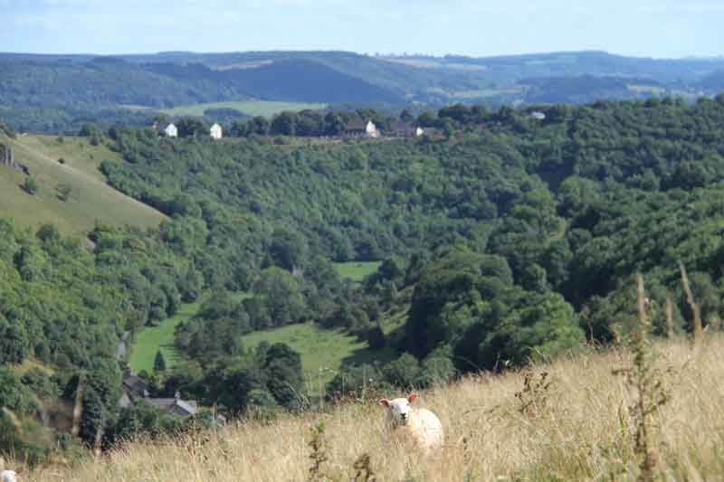

Brook Corner
Cressbrook Mill - Monsal Dale - Peak District
Location, Activities and Information
The holiday apartment, Brook Corner, is located at Cressbrook Mill, a stunning mill conversion in the beautiful valley of Monsal Dale. It lies between Bakewell and Buxton in the heart of the Peak District National Park and is just a mile from Monsal Head, a well known and spectacular view point.
The accommodation is shown in the centre of the Google Map below, next to the striped green field.
Local Activities
Cressbrook Mill is a perfect location for walking holidays as there are many walks you can take directly from the property and of course hundreds within a short drive. It is also ideal for cycling, climbing or generally exploring the Peak District. The apartment is next to the River Wye and very close to the Monsal Trail (with tunnels now open). Water cum Jolly Dale and the Rubicon climbing wall (below right) are just a short stroll away. Walking distance from the picturesque view point at Monsal Head (below left) and is ideally situated to visit the many local attractions, with plenty of great village pubs and restaurants nearby.


Pubs & Dining
The nearest Pub & Restaurant is The Monsal Head Hotel, a mile away (there is a steep hill to negotiate), with fantastic views (above left) of Monsal Dale and the Viaduct. A few hundred yards beyond Monsal Head is the Pack Horse at Little Longstone. Further excellent pubs are located in Great Longstone (White Lion) and Litton (Red Lion). For a breakfast (fry up or brunch) there is the Yonderman Cafe at Wardlow Mires (3 miles), a basic road type cafe that does the perfect breakfast at a good price in simple surroundings.
Walking in the Peak District
The location of the accommodation really is perfect for a great walking holiday. There are a miriad of excellent walks directly from the property so there is no need to drive to find a great walk. Whether you enjoy walking up and down hills or strolling along by the river you will not be disappointed. The Monsal trail tunnels were opened in 2011 and provide easy walking, cycling and even horse riding along its stretch from Bakewell to Blackwell. Along the Monsal Trail there is a cafe at Hassop Station and a lovely cafe overlooking the view at Monsal Head (called Ellerys Cafe). Of course there are plenty of great walks all over the Peak District and many are within easy reach of Cressbrook. The White Peak Ordnance Survey Explorer map OL24 is the ideal map to have and Dark Peak OL1 is useful if you wish to venture further north around Ladybower and Kinder Scout.
Cycling and Mountain Biking in the Peak District
Similarly to walking, whether you prefer great road cycling, easy trails or adventurous single track, there are plenty of opportunities direct from the property. The Peak District is very popular for road cycling although it is not something we have done ourselves. An easy (or family) option is to hire bikes from points along the Monsal Trail at Hassop or Blackwell explore the trail (and beyond) whilst still keeping it leisurely. What we do know about are the fantastic routes for off road trail riding and singletrack on a mountain bike. Depending on your capability (and enthusiasm) there are numerous trails, bridleways and quiet lanes to keep you away from the traffic and truly off road. We can vouch for the fact that you can cycle from Cressbrook Mill to ride Rushup Edge and back in half a day (and that's at nearly 50!). With that in mind you can just imagine all the options available from an hour to a full day in the saddle. For mountain biking in the Peak District the White and Dark Peak Explorer maps are great - or better still a Garmin?
Climbing
The Rubicon Wall at Water-cum-Jolly (yes that is the official name on the map!) is just a matter of metres away (probably about 150m) and is a well known climbing wall that people travel to for miles to hone their skills on a limestone rock face in such a beautiful setting. The Rubicon Wall is featured on climbing websites such as Rockfax and UK climbing so check those sites out for full details.
Places of Interest
Chatsworth House (6m), Haddon Hall (6m), Various Blue John (and other) Caverns nr Castleton (10m), Monsal Trail adjacent, Tissington Trail (10m), Swimming (Bakewell - 4m)
Local Towns & Villages
The market town of Bakewell with it's Monday Open Market, Cattle Market, great shops, cafes and restaurants is just 4 miles away. Take in the history of Buxton with its Opera house or enjoy days out in the beautiful parkland of Chatsworth House. There are numerous pretty villages including Ashford in the Water with its great village shop, many of them still with well dressings at their time of year. Although in the heart of the Peak District, Cressbrook is only a short drive (or bus journey) from many villages, towns and the City of Sheffield: Bakewell (4m), Eyam (6m), Buxton (7m), Castleton (10m), Matlock (12m), Sheffield (18m).
Distances
Nearest Airport: Manchester - 34 miles
Nearest Trains: Grindleford (10m), Matlock (12m), Buxton (13m), Chesterfield (17m), Sheffield (19m)
Nearest Bus: At Cressbrook Mill (service to Bakewell)
Nearest Motorway: M1 Jn29 (Chesterfield) 21 miles
Nearest Shop: Roberts in Ashford (excellent village shop) 2.5 miles
Nearest Supermarket: Co-op (Bakewell 4m), Morrisons (Buxton 13m), Waitrose (Buxton 13m)